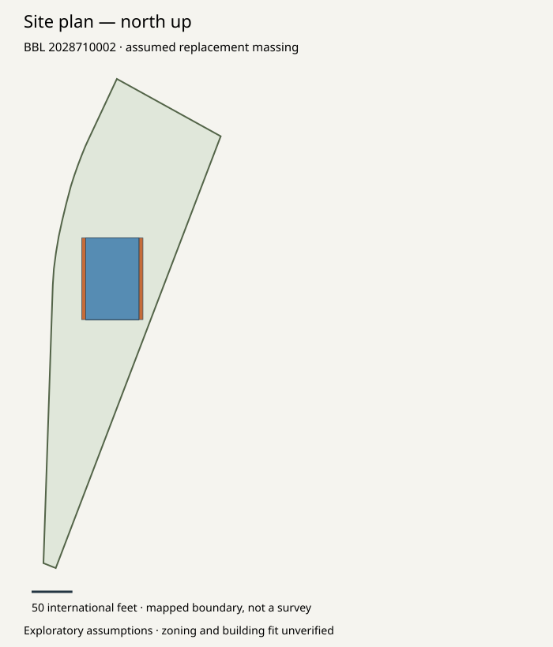
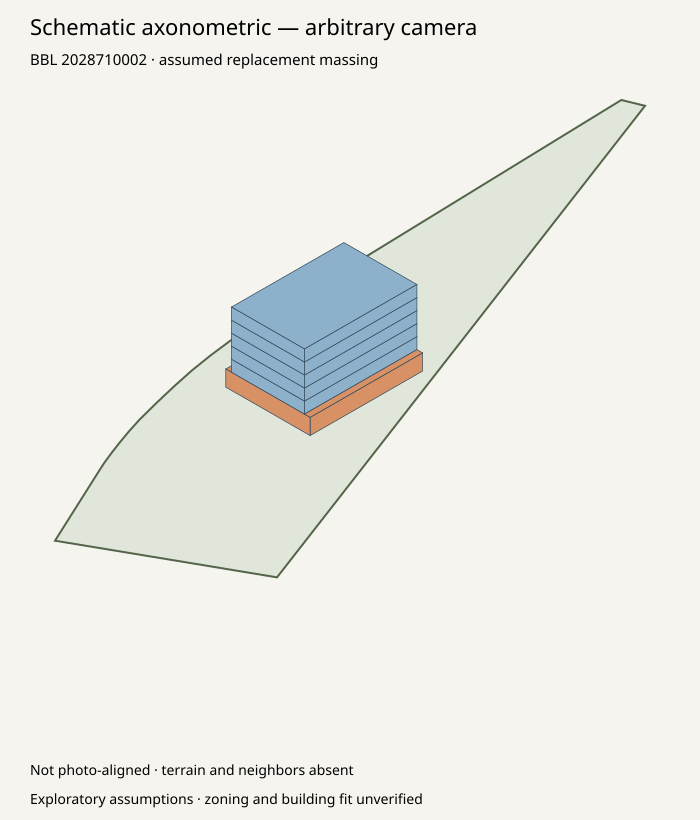

blocked_area_mismatch · assumed design; all professional review gates unknown.
| Quantity | Geometry proxy sf | Analysis sf | Difference sf | Status |
|---|---|---|---|---|
| gross | 40000.0 | 40000 | 0.0 | consistent_within_tolerance |
| nonresidential | 7500.0 | 6000 | 1500.0 | mismatch |
| residential | 32500.0 | 34000.0 | -1500.0 | mismatch |


# Grounded exploratory massing: 2028710002 **blocked_area_mismatch**. Design assumptions, not a zoning envelope or professionally validated design. ## Geometry and analysis agreement | Quantity | Geometry proxy sf | Analysis sf | Difference sf | Status | | --- | --- | --- | --- | --- | | gross | 40000.00 | 40000.00 | 0.00 | consistent_within_tolerance | | nonresidential | 7500.00 | 6000.00 | 1500.00 | mismatch | | residential | 32500.00 | 34000.00 | -1500.00 | mismatch | ## Source and assumptions Mapped source: NYC DCP MapPLUTO 26v2. BBL matches the verified analysis. Original bytes, exact query, metadata and retrieval receipts are in parcel-source/. Mapped polygon area: 59891.25 sf. Source recorded lot area: 59050.00 sf. Difference: 841.25 sf; unreconciled observations, not a correction. Assumed floor count: 6. Assumed total height: 64 international feet. Coordinates and rationales are in scenario.json. No height or footprint was inferred from the source photo. The 40,000-sf example dimensions were selected to match the area budget algebraically. A match is a consistency test, not independent validation. Gross polygon area and fractional use allocation are simplified proxies, not code-compliant measured areas or architectural layouts. All review gates remain unknown: zoning, survey, access_egress_layout, structural_geotechnical, finance, existing_context, photo_camera, professional_review. ## Inspect the outputs   [Floor schedule](floor-schedule.csv) · [Geometry IR](geometry.json) · [Mesh](massing.obj) · [Visual handoff](visual-handoff.json) analysis-run/ retains the complete original verified analysis. This geometry module has not changed its assumptions, calculated homes or review gates. No photorealistic image was generated.
Geometry IR · OBJ mesh · Floor schedule · Visual handoff · Scenario assumptions